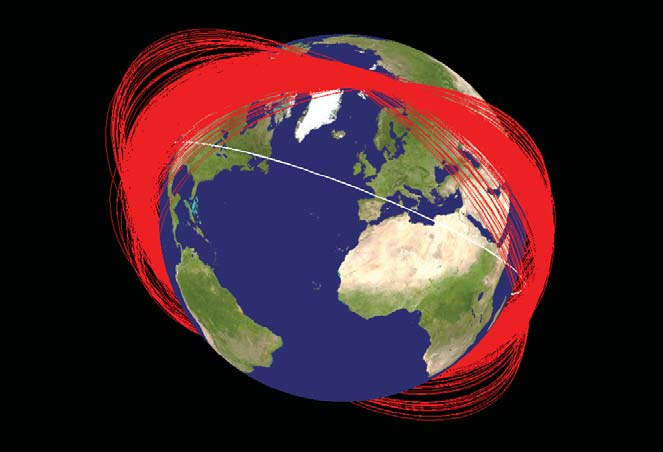
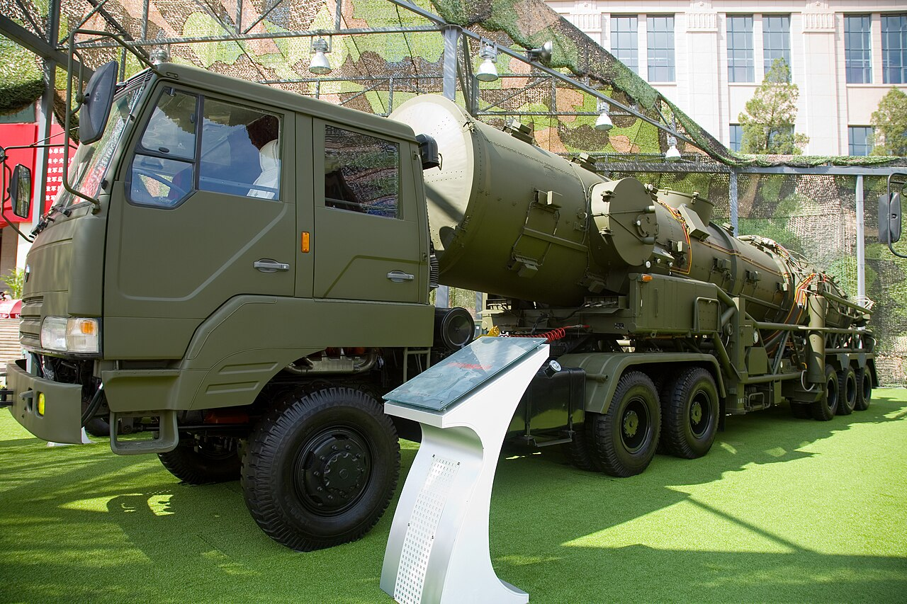

The 2007 Chinese ASAT Test How one missile made the largest cloud of space debris in history
On 11 January 2007, China reached up and destroyed one of its own satellites — and in the same instant created the single largest field of trackable space debris ever recorded, a hazard that will outlast everyone reading this.
A dying weather satellite
Fengyun-1C — “Wind and Cloud” — was one of China's first weather satellites, launched in 1999 into a sun-synchronous polar orbit about 865 km up. By 2007 it was old and near the end of its working life, which is precisely why it made a convenient target: it could be destroyed without the loss of an operational spacecraft. What was not convenient was where it sat — deep inside the most crowded, most valuable band of low Earth orbit.

The weapon
The interceptor — designated SC-19 by U.S. intelligence — was a direct-ascent weapon: a road-mobile missile derived from the DF-21 (CSS-5) medium-range ballistic missile, fired from Xichang. It didn't go into orbit; it lobbed a ~600 kg kinetic kill vehicle onto a ballistic arc to meet the satellite. The kill vehicle carried no explosive at all. It didn't need one.
A DF-21 launcher at the Chinese Military Museum, Beijing. Photo: Max Smith / Wikimedia Commons — public domain.
Eight kilometres a second
The kill vehicle met Fengyun-1C almost head-on at a closing speed of about 8 km/s — roughly 32,000 km/h. At those hypervelocity speeds, solid metal behaves more like a fluid: the two bodies effectively flowed through each other, and the 750 kg satellite was shattered into a spray of thousands of fragments that kept racing along the original orbit. There was no fireball — just a sudden, silent expansion of shrapnel.
A ring around the world
Within minutes the fragments began smearing out along Fengyun-1C's path. Within about ten days they had wrapped the entire orbit into a ring; within three years they had spread across much of low Earth orbit. The map at the top of this page — NASA's rendering of the debris orbit planes one month after the strike — captures that ring as it closed.

The largest debris cloud ever made
The U.S. Space Surveillance Network eventually catalogued more than 3,000 trackable fragments — golf-ball-sized and larger, more than any single event before or since — with estimates of tens of thousands more too small to track. The debris was flung across an enormous altitude band, from as low as ~175 km to as high as ~3,600 km, but its densest core stayed near Fengyun-1C's original ~865 km orbit — right in the busiest neighbourhood of space.
Where the debris ended up — spread by altitude
Relative number of fragments by altitude band (km). The cloud spans ~175–3,600 km, but its core stayed near the ~865 km orbit.
How the tracked count grew
Fragments associated with the Fengyun-1C event · U.S. Space Surveillance Network. New pieces kept being detected for years; others slowly reenter.
Everyone has to dodge
The debris did not stay China's problem. On 22 January 2007, two-thirds of all catalogued payloads in orbit — 1,899 of 2,864 — passed through the affected altitudes. That June, NASA fired the thrusters on its Terra environmental satellite to sidestep a fragment. In 2011 a piece passed within about 6 km of the International Space Station, and in 2013 a Fengyun-1C fragment is believed to have struck the small Russian BLITS satellite and knocked it out of service — debris from the test hitting another spacecraft, exactly the cascade risk everyone had feared.
A multi-century liability
Because so much of the cloud rides high above the drag of the upper atmosphere, it decays extraordinarily slowly. Only about 6% had reentered a decade later; projections put roughly 79% still in orbit in 2108. Some analyses warned the test nudged the debris density in this band toward the threshold of the Kessler Syndrome — a runaway chain of collisions that feeds on its own wreckage. The contrast with the U.S. is stark: when America destroyed a satellite in 2008 (Operation Burnt Frost), it did so deliberately at very low altitude, and that debris cleared within weeks.
Why it won't go away — predicted lifespan
Projected share of Fengyun-1C debris still in orbit across the century after the test.
Where it fits on this globe
Fengyun-1C is one of the four great breakup clouds you can switch on and off in this Debris Tracker — and by a wide margin the biggest single deliberate act. Two of the other three are also intentional strikes: Russia's 2021 Cosmos 1408 ASAT and, historically, the low-altitude U.S. test of 2008.
The biggest debris-making events, side by side
Approx. catalogued fragments per event (NASA Orbital Debris Program Office). Gold = the 2007 Chinese ASAT; blue = the other clouds on this globe; grey = the 2008 U.S. test, which mostly reentered.
Japan urged that space be used only for peaceful ends; Australia warned of an arms race spreading into orbit; the United States called the test inconsistent with the spirit of cooperation. China insisted it had given other nations advance notice and was not seeking an arms race in space.
Whatever the diplomacy, the physics is indifferent: the fragments are still up there, and will be for generations.
Images: NASA Orbital Debris Program Office (debris orbit planes; LEO population) — public domain; DF-21 launcher by Max Smith / Wikimedia Commons — public domain.
Charts are original to NAZAR, drawn from figures and data in the sources above; approximate values, rounded for legibility.